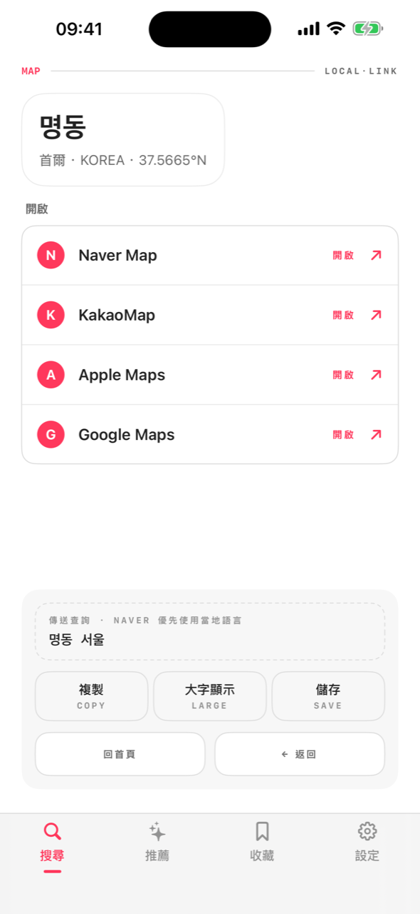
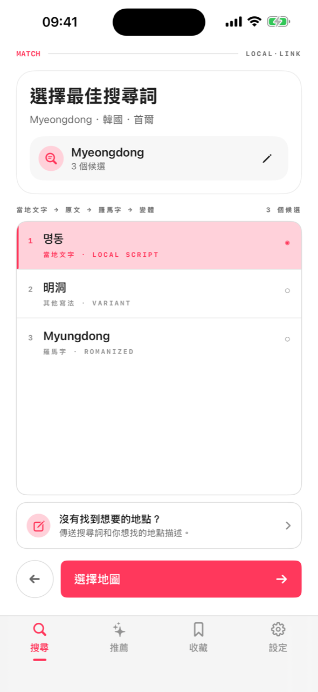
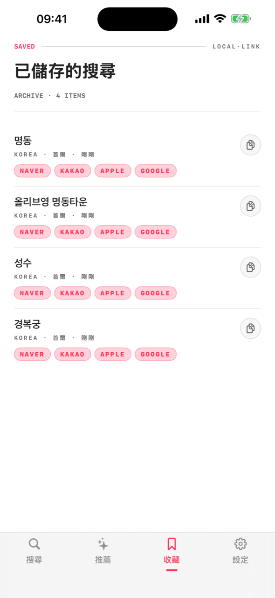

在韓國，Google 地圖很難用 — 當地人都用 Naver 和 Kakao。在地連結把你知道的名稱轉成在地文字的搜尋詞，再連到那個國家真正常用的地圖 App。

選好國家和城市，App 會依當地的寫法準備搜尋。
英文或羅馬拼音都可以 — 自動產生在地地圖真正能辨識的在地文字候選。
一鍵把轉換後的搜尋詞傳給 Naver、Kakao、Google 或 Apple 地圖。沒裝 App 就用網頁開啟。
在地地圖服務用在地文字收錄地點。在 Naver 輸入「Myeongdong Kyoja」什麼都沒有，輸入 명동교자 馬上找到。
依目的地優先顯示真正能用的地圖 App。沒有安裝時自動改用網頁地圖開啟。


轉換資料內建在 App 裡，沒有網路也能轉換。
不需要帳號，分析資料不會離開你的裝置。
收藏的地點透過你自己的 iCloud 同步到 iPad，不經過我們的伺服器。
首爾美妝、東京拉麵 — 依目的地精選常用搜尋。
繁體中文 · English · 한국어 · 日本語 · 简体中文，介面和轉換都支援。
把在地文字全螢幕給計程車司機看，或複製到任何地方。